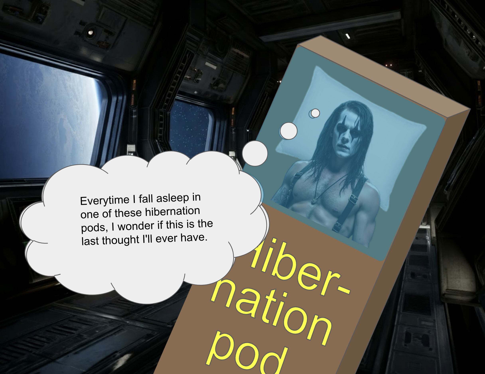

_Jack Bone_ climbed out to the surface of the asteroid, awaiting for the pickup of his pirate ship. Perhaps this was a set-up, he wondered. Maybe the solar systematic authorities (SSA) were set to arrive an incarcerate him for his crimes against Timothy Haught. Jack licked his lips in memory of the horrific act. A pulse of senuous pleasure hummed through his bodies, as he remembered the feeling of his orbital floor as he scraped out his eyes.
Then he saw the vessel. It had an oversized fuel tank, loaded with extra U-235 fuel, as this vessel couldn't depend upon gravity assists while it traveled incognito. An electromagnetic cloud lifted Jack up and brought him inside the ship.
When Jack nestled into his hibernation pod, laying his head on the cushioned pillow, a wave of anxiety overcame his being. Was this the last thought he'd ever have? When he went to sleep in the hibernation pod -- while he was asleep in the hibernation pod -- would something go terribly wrong? Would this be the last memory he ever had?
Jack whisked away the thought, closed his eyes, and let the medication put him to sleep.